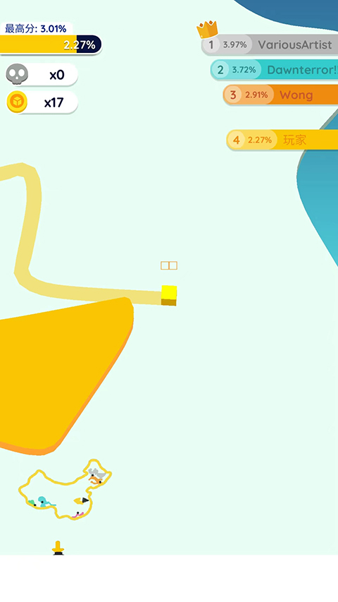
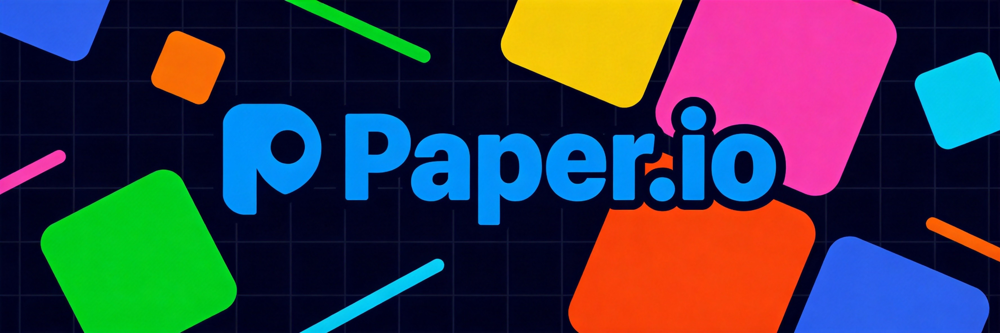
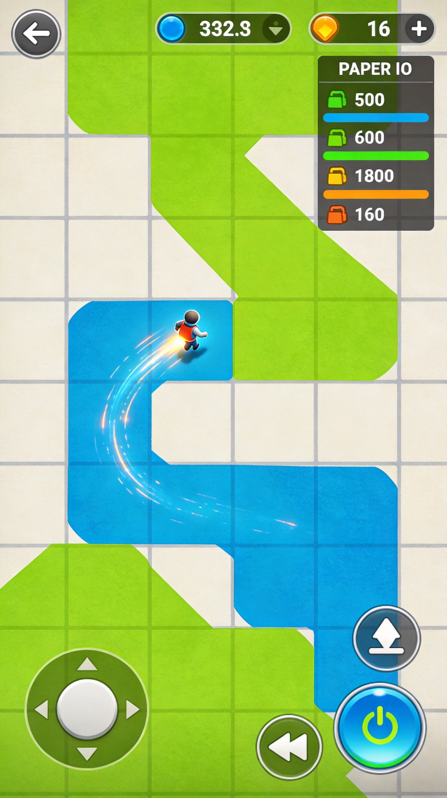
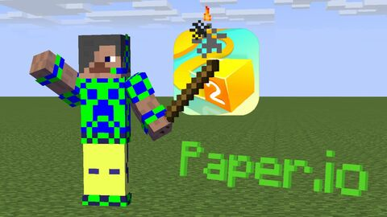
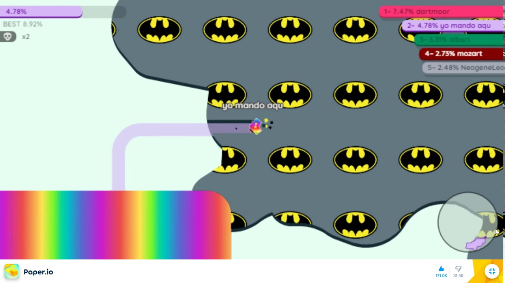

Paper.io looks deceptively simple—fill squares, don't get clipped. But once you're past the basics, the game becomes a tense strategic dance where territory control, risk assessment, and calculated aggression separate the 50% players from the top 10%. This advanced guide exposes the tactics that dominate lobbies.
🏴 Advanced Territory Control

Territory isn't just about percentage—it's about quality, position, and defensibility. A scattered 30% is worse than a compact 20%.
The Compact Core Strategy
Build a small, dense territory in the center of the map before expanding aggressively. This "home base" serves multiple purposes: it's your safe fallback, it makes your line trails shorter when expanding, and it creates psychological pressure on opponents.
The mistake most players make is spreading thin too early. They claim a huge percentage by creating long, vulnerable tentacles across the map. One death wipes out everything. Compact territories are harder to kill.
Strategic Positioning
Corner territories are gold. A corner gives you two natural walls, reducing your exposure by 50%. Look for corner positions early and fight to maintain them. Similarly, territories adjacent to map boundaries (water edges) are easier to defend.
Don't expand in straight lines. Create irregular, jagged territories that make it harder for opponents to predict your path and easier for you to create ambush setups.
📈 Safe Expansion Patterns

The Loop Return
When expanding your territory, always plan your return route before committing. A common mistake is venturing too far and then being forced to take a dangerous straight-line return. Instead, plan loops that connect back to your territory at multiple points, giving you options.
Reading Your Trail
Your trail is your most vulnerable moment. Advanced players learn to read opponent trails like a predator reads tracks. A fresh trail means the player recently died or retreated. If you see someone extending toward you with a thin trail, they're vulnerable—cut them off and force them to retreat into you.
Timing Your Expansion
Expansion isn't constant—it comes in waves. Watch when opponents are completing their captures. Right after someone fills a square, they're usually committing to a new venture. This is the ideal time to extend toward their territory while they're distracted. The chaos after a capture is prime hunting time.
⚔️ Kill Hunting Strategies

Kills in Paper.io are about predation, not confrontation. You rarely win head-on fights. You win by being in the right place when someone makes a mistake.
The Trail Ambush
Position yourself near a popular expansion route and wait for victims. When someone extends past your territory, they create a trail. Instead of chasing them (which often fails), position yourself perpendicular to their trail. When they inevitably turn to return, they'll run right into you.
The Percentage Trap
High-percentage players think they're safe. Wrong. Greed kills high-scorers. They want to maintain their percentage, so they take fewer risks. Use this against them. Extend aggressively toward territory gaps near high-scorers. They'll either give up ground or expose themselves trying to maintain their position.
Forcing Errors
You can't always wait for mistakes. Sometimes you need to create them. Extend toward an opponent's territory aggressively. Most players panic when threatened and make suboptimal decisions—retreating hastily, taking bad angles, or overextending into a trap you've prepared. Apply pressure, then capitalize.
🛡️ Defensive Play
The Emergency Retreat
Knowing when to abandon an expansion is crucial. If your trail is threatened from two directions, forget the capture and retreat immediately. Your percentage means nothing if you're dead. The mental discipline to cut losses is what separates good players from great ones.
Territory Denial
You don't always need to kill someone to neutralize them. Occupy the space they need. If an opponent is trying to complete a capture, position yourself to interrupt. You don't need to touch them—just block their path long enough that the timer runs out. This is especially effective against players using escape routes through your territory.
When defending your territory from an intruder, don't chase them into your own space. Instead, position yourself at the exit they need to escape through. Let them dig their own grave.
The Cleanup Play
After a player dies, their territory becomes vulnerable. Immediately move toward the gap they left. Even if you can't claim it all, a few quick captures while others are distracted can add 5-10% to your score with minimal risk.
🧠 Player Psychology
Paper.io is a game of psychological pressure as much as spatial awareness. Understanding how players think gives you massive advantages.
The Fear Factor
Most players play defensively. Use this: appear more aggressive than you are. Making sudden moves toward opponents often causes them to panic-retreat, even if you weren't actually threatening them. This creates space for you to expand safely.
Reading Patterns
Players develop habits. Some always expand clockwise. Some always retreat to corners. Some play recklessly after dying. Notice patterns and exploit them. If you remember that a specific player always takes the same escape route, you can set up an ambush for their next overextension.
Risk Assessment
Calculate the risk-to-reward ratio before every move. That 5% territory might look tempting, but if it requires crossing through contested space where multiple opponents are active, the risk isn't worth it. A safe 2% is better than a risky 5%.
🎯 Situational Tactics
Late Game Strategy
In late game, everyone is dangerous. The player at 40% might be better than you. Avoid expansion entirely unless it's completely safe. Focus on defending what you have. The goal shifts from gaining territory to not losing it.
Small Territory Survival
When you have minimal territory, you have two options: play extremely cautiously to build up safely, or play extremely aggressively to steal territory from distracted players. The middle ground (moderate risk-taking) gets you killed. Commit to one strategy.
The Comeback Play
After dying with low percentage, wait before re-entering dangerous zones. Most players immediately return to their previous territory, only to die again to whoever killed them. Instead, find quiet space to build percentage, then return when the threat has moved on.
❓ Frequently Asked Questions

What's the ideal territory size to maintain?
There's no universal answer—it depends on your skill and playstyle. Most competitive players aim for 15-25% as a comfortable base. Beyond 30%, you're a target. The goal is enough territory to be worth killing but not so much that defending it consumes all your attention.
How do I escape when trapped?
If you're in enemy territory with no escape, you have two options: boost straight through the smallest gap, or try to capture the territory you're in to create an escape route. Neither is guaranteed. Prevention is key—always maintain awareness of exit routes.
Should I focus more on capturing territory or killing players?
Both matter, but territory is more reliable. Kills depend on others making mistakes, while territory capture is entirely within your control. Focus on efficient territory building, then capitalize on kills when opportunities arise naturally.
How do I deal with players who constantly invade my territory?
Aggressive players respect aggression. Instead of always retreating from invaders, sometimes turn and pressure them. Most invaders expect you to flee. When you don't, they panic. Even if you don't kill them, forcing them to retreat disrupts their plans.
What's the best way to practice advanced tactics?
Play custom games with fewer players to reduce chaos. Focus on one technique at a time—practice territory expansion in some sessions, kill hunting in others. Record your games if possible to review your decision-making afterward.
Does map position matter in Paper.io?
Yes, significantly. Corners and edges are defensible; center is valuable but contested. The best strategy is establishing a defensible position early, then expanding outward when you have a safe base to retreat to.
📝 Conclusion

Advanced Paper.io play is about territory quality over quantity, patience over aggression, and reading opponents. The fundamentals will keep you alive, but mastering territory control, kill positioning, and psychological pressure will put you at the top. Remember: every square matters, every trail is an opportunity, and every death teaches something.
For more strategies, check out our Paper.io Complete Guide or try Slither.io for a different kind of competitive survival game.
Last updated: January 27, 2024
Written by the iogameguide.com team